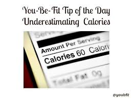
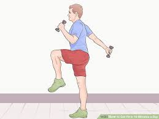
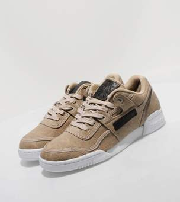

Set a time for exercise and workout:Strive for at least 150 minutes of exercise per week. Break it down to 40
Minutes 4 days a week, 30 minutes 5 days a week, or however you’d like!
Keep a journal: Tracking keeps you accountable, and studies show that those who keep journals are more successful at weight loss than those who don’t.
Eat fresh and natural foods instead of processed foods:Eat foods that are closest to their natural state as possible. Eat whole, fresh foods in a rainbow of colors instead of processed and packaged ones.
Drink water: Most adults need about two quarts of fluid per day to replace normal water loss or approximately eight 8-ounce glasses of water per day.
Find a deeper reason to get healthy other than a number on the scale:
Do you want to be able to run with your children or grandchildren? How about being able to enjoy food without feeling guilty all the time? Staying in touch with a deeper reason for health can motivate you to keep going when things get tough.
Add some muscle building activities to your workouts:
Free weights, resistance bands, muscle sculpt classes or using your body weight with push-ups, planks and squats all work.
Keep in mind that striving for perfection may lead to disaster: Set small goals and stair step your way to success by developing healthy habits.
Don’t DIET. Reverse the letters in the word and EDIT what you eat. Make it a lifestyle change toward healthier foods, not a deprivation plan.
Take one to two days a week for active recovery.
Take a walk. Do a gentle yoga class. Just do something that’s less intense than what you do for exercise the other days of the week.
Follow the 80/20 rule.
Eat healthy 80 percent of the time. Indulge occasionally, but make sure most of your choices are healthy.
Get an accountability partner for exercise and weight loss support:Exercise together, share tips and swap encouragement.

Display your results:
Whether it’s the pounds you have lost, how many times you worked out this week, or a picture of you showing off results, display it to motivate you to keep it up!
Circle the days on a calendar when you’ve worked out: That way, you can feel proud of your successes and be able to repeat the schedule that worked for you in the past.
Buy a new workout top, headband, or piece of equipment.Having something new can motivate you to actually use it!
Make a list of positive affirmations that work for you.
Here’s a few to get you started: I love to exercise. I want to live a healthy life. I am getting more fit each day.
Don’t start and stop, just keep going.
If exercise is new to you, start off slow and aim for a few workouts per week and then increase as you go.
Create measurable goals you can check off along the way.These should be smaller things that take you only a couple of weeks to accomplish. You can have your ultimate goal, but if it’s years out, motivation can wane.
If you have a desk job:
consider a standing workstation or at the very least, stand up or pace when you use the phone. People in constant motion burn more calories.

Set rules that work for you.
Many people who have successfully lost weight and kept it off have set rules for themselves.
Make a list of bad habits you are willing to give up and the good habits you will start.
Change your limits and surprise yourself.
Push yourself. When you surprise yourself, it will motivate you to keep going—or set your sights higher.
It takes a deficit of 3,500 calories to lose one pound. Calories in, calories out. Just work on burning more than you take in.
Read other success stories as motivation. Learning about others’ success can encourage you to keep going and believe in your own.
People have the tendency to underestimate the calories they consume.
Tracking ALL of your calories for a week or two can be helpful in getting an honest assessment of how many calories you’re eating per day. Don’t skip anything – you’ll only hurt yourself by not being honest.
Try yoga.
Yoga can help you feel centered. It stretches and strengthens your body, improves your breathing and awareness, and empowers your mind.
Find music that motivates. Music can help take your workout up a notch if it’s music that appeals to you.

Make sure your footwear is suitable for your workouts.
Everything from ankle, knee, and hip pain can be aggravated or even caused by improper footwear.
Be sure to stretch after exercise.
If you can loosen your muscles post-workout, you’ll have happy joints ready to go for your next sweat session and less pain.
We need more meditation and less medication.
Meditating is easy to do and its benefits are numerous. Reduce stress, improve your health, get centered, breathe better and get focused.
Develop a positive attitude.Your thoughts determine how you feel and often determine what you can accomplish. As Napoleon Hill once said, “What your mind can conceive and believe, you can achieve.”
Realize exercise and your diet are married forever. You can’t lose weight with one and not the other— period. There’s no getting around it.
Same habits equal same results. If you aren’t getting results, change what you are doing.
Don’t expect the weight to come off fast. Be realistic! Remember: it takes time to gain weight; it takes time to lose it.
Exercise is a great stress reliever and mood booster. When you’ve had a rough day, going for an outdoor run or throwing a few punches in a kickboxing workout may be just what you need!
Be prepared for hunger to strike when on the go.
Keep non-perishable, healthy snacks on hand in multiple locations like your car, in your gym bag and purse. That way you can always have a healthy option you can turn to when in need.
Reduce stress!
Stress produces higher levels of the stress hormone cortisol which can make you crave sweet and salty foods. Reducing your stress will not only help your mind, it can help your waistline!
Schedule your workouts just like you would any other appointment and stick to it.You wouldn’t no-show a meeting at work or a doctor’s appointment; don’t no-show your workouts either.
Ramp it up slowly. If you hate exercise, make incremental changes each week. Aim for 20 minute workouts at first, then increase your time.
When you’re in the mood for a crunchy snack, try popcorn.It’s a low calorie food you can eat a lot of that also has the added benefit of fiber. Homemade is the best!
Drink lemon water in the morning to hydrate and balance pH levels. Alternatively, dilute one teaspoon to a maximum of two tablespoons of apple cider vinegar in water. Start small and increase as you can handle the taste.
Follow fitness apps and guidelines and also fitness accounts on social media. Use them as your inspiration,encouragement and motivational tool.They are also ways you can use to track your progress at your fingertip.
Cook at home as much as you can. A You’re better able to control all the ingredients and stay away from excess calories.
Try circuit training.
Circuit style workouts combine multiple different exercises and charge your metabolism while helping you shed pounds.